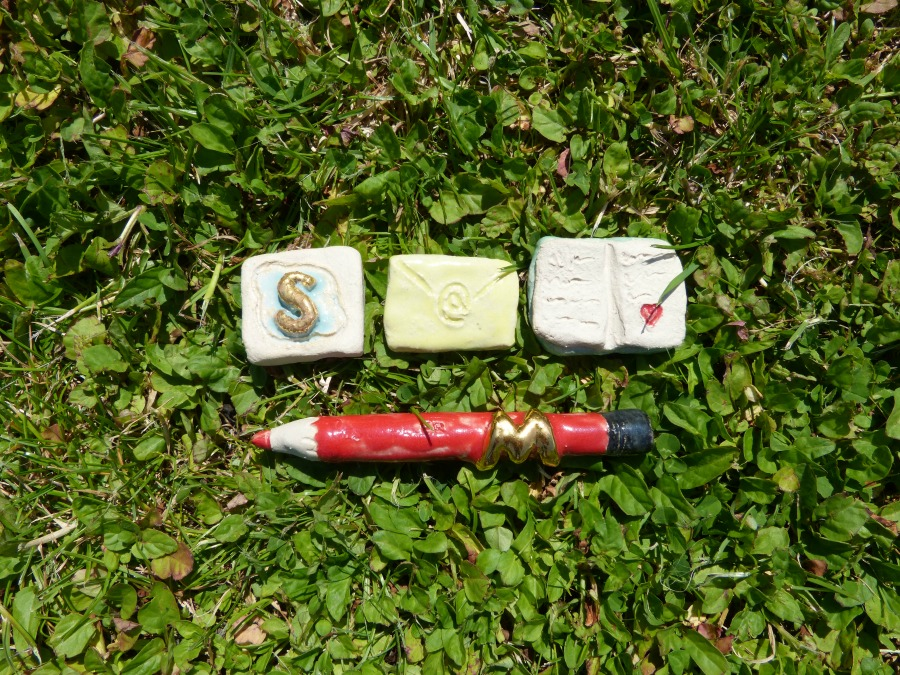

How I motivate myself to write
Thursday, 12th February 2015

It can be hard to make the time to write.
Some days it feels as though writing is really, really difficult. I just don't have time to sit down and wrestle with the muse. For a start, it takes focus and concentration - qualities that can be hard to tap into, when I've just looked at twitter or read the news. And some days, my to-do list of client work is as long as my arm, and I have groceries to buy and cats to feed and a garden to look after. I have emails to send and blog posts to format and creativity feels like it's never going to happen. I have lists and lists of things to get done and somewhere on that, write. But it's too hard, and I don't have time.
How I motivate myself
The first thing I do is step back, and get some perspective. I'm a writer, sure, but there are many different kinds of writing in my day. Morning pages, free flow journalling, fiction, little creative side projects like the book I'm working on about our cycle tour. Blog posts, emails, tweets, web copy. If I'm caught up in "Writing is so BIIIG, how will I ever get started?" it's usually because I'm lumping all of this together. It helps to break it down. So I know that first thing in the morning, I'm letting my ideas flow freely, ignoring the internal critic or editor. I follow Julia Cameron's advice in The Artist's Way to the letter here. No rules, no censor. It's the perfect way to start the day by remembering that nothing is wrong, everything is perfect. And if I don't know what to write, that's what I write, for three pages. One way or another, it all flows out. Blog posts, social media statuses or sales pages require a different energy. I love Alex Franzen's Feel/Know/Do approach which keeps me focussed on who I'm connecting with, and what impact I want what I'm writing to have. For these, I find that a deadline or a calendar works wonders. Perfectionism need not apply here. Big projects, like a book or a writing project take a third approach. What works for me is breaking the project down into chunks - by dividing up the word limit, for example, and setting aside time for editing and revising. I'll allocate then a chunk of time each day in which I'll work through each section - 30 minutes a day is a great start - and that way I can see the progress I'm making, so it never feels overwhelming.A to-do list as art
My friend Lea is my "accountability buddy". We Skype a few times a week, usually, to check in on our goals and where we're at. Being Swiss, Lea is a lover of clocks and deadlines. She squeezes the most out of every minute of her day, and her structured approach has started to rub off on me. Lea's superpower is her ability to set goals. One thing Lea's learned in her years of goal setting and making dreams real, is that motivation is all about connecting to why you're doing what youre doing. When your Why is a line on a to-do list, it can be hard. Lea makes little ceramic "triggers" that represent goals and habits. I have a whole set - for book writing, for journalling, for emails and yoga and everything else. So as well as breaking my work down into different tasks I have physical reminders of what each of them are. You can see three of them in the picture above - one of them is a little Skype symbol to remind me to Skype Lea! Something about having a little handmade reminder of the beauty of my wish, of my desire, is really grounding. I'll line them up in front of me at the start of the day and know that later, as I complete each task, I'll physically move it back on to the box. It's a to-do list brought to life, reminding me that writing isn't just tasks to cross off a list. They're beautiful, handmade intentions, pieces of art that remind me of the art that I want to create. It's one of my favourite ways to stay motivated. (And if you're interested in ceramic triggers of your own, check out Lea's website here).Need a hand?
Sometimes, the things that are hard to get done are just hard because we need help with them. If you're struggling with motivation and feel like it's time to let go of the "write website copy" part of your to-do list, then I can help! Click here to find out more about my work.